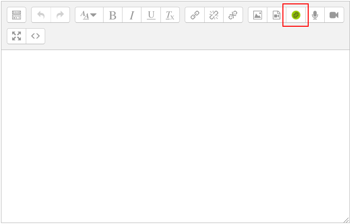
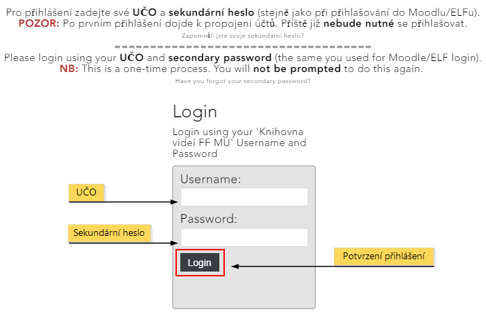

Propojení s Moodlem¶
Jednou z předností Medialu je jeho propojení s prostředím pro e-learningové kurzy Moodle. Díky němu můžete využít všech výhod mediální knihovny, aniž byste opustili svůj kurz.
Přístup do Medialu¶
Přístup do Medialu je zajištěn dvojím způsobem: jednak prostřednictvím zeleného tlačítka Medial (obr. 1), které je součástí HTML editoru a pomocí kterého můžete vkládat videa a zvukové nahrávky do všech obvyklých modulů, a jednak prostřednictvím videoúkolu, který studentům umožňuje odevzdávat řešení úkolu v podobě nahrávky z Medialu. Tlačítko Medial i videoúkol otevřou okno se zjednodušeným rozhraním Medialu, díky kterému budete moci do své knihovny přidávat obsah, procházet jej a vkládat do Moodlu.

V obou případech budete moci buď nahrát do kurzu (a zároveň do Medialu) nový obsah, nebo do kurzu vložit již existující nahrávku z Medialu.
Při prvním přístupu z Moodlu do Medialu budete muset zadat své přihlašovací údaje v podobě UČO a sekundárního hesla (obr. 2). Po tomto prvním přihlášení se Vaše účty v obou systémech spárují a při dalších přístupech tak již přihlášení nebude nutné.
Poznámka: Propojení účtů je nutné i pro zobrazení videí vložených do Moodlu – i studenti se tedy budou muset napoprvé přihlásit.
 Obr. 2: Úvodní přihlášení do Medialu
Ze svého kurzu pak budete mít přístupný stejný obsah jako z webu Medialu. Moodle si navíc ke vkládaným videím dovede nastavit přístupová práva, takže vložíte-li do kurzu své soukromé video, studenti si jej v rámci kurzu budou moci přehrát, aniž byste jej museli zveřejňovat. Mimo kurz přitom bude nahrávka nadále nedostupná.
Medial vs. vložit multimédia¶
Oproti klasickému vkládání multimédií nabízí Medial řadu výhod. V prvé řadě můžete mít všechny své nahrávky na jednom místě, snáze si tak o nich udržovat přehled a pohodlněji je spravovat. Všechny změny provedené v knihovně médií se navíc přenáší do vložených videí v kurzu: pokud tedy například nahradíte nahrávku za jinou nebo vložíte k nahrávce titulky, projeví se změny téměř okamžitě ve všech kurzech, ve kterých jste tuto nahrávku použili. Vkládání z Medialu Vám navíc nabízí více možností přizpůsobení. Můžete si například vybrat, v jaké velikosti se nahrávka na stránce zobrazí, zda se zobrazí i její popisek či zda si ji studenti budou moci z kurzu stáhnout. V neposlední řadě pak lze v Medialu uchovávat mnohem větší soubory (až do 10 GB), což zejména oceníte, pokud chcete do kurzů vkládat delší videa ve vysoké kvalitě.
Časté dotazy (FAQ)¶
K jakým videím se z Moodlu dostanu?
Při přístupu do Medialu prostřednictvím Moodlu se dostanete ke všem videím, která byste měli přístupná ve webovém rozhraní Medialu. Standardně to tedy budou nahrávky ve veřejných kategoriích, nahrávky ze zaměstnaneckých kategorií Vašeho pracoviště a Vaše osobní nahrávky. Všechna tato videa budete také moci vložit do svého kurzu, pouze svá vlastní videa však budete moci prostřednictvím Moodlu také editovat.
Mohou videa z Medialu vkládat do kurzu i studenti?
Z bezpečnostních důvodů nemají studenti možnost používat v kurzech embedovací kódy, a tedy nemohou ani vkládat obsah z Medialu. Mohou ovšem odevzdávat úkoly v podobě nahrávek z Medialu, pokud v nastavení Úkolu povolíte možnost “odevzdat video”.